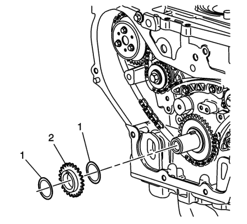

Sustitución de la cadena de la distribución del árbol de levas, el piñón de cadena y el tensor
Herramientas especiales
| • | EN-45027 Herramienta tensora |
| • | EN-45059 Medidor de ángulos |
Si desea informarse sobre herramientas regionales equivalentes, consultar Herramientas especiales .
Procedimiento de desmontaje

- Quite la bujía número 1 del cilindro. Consultar Sustitución de la bujía .
- Gire el cigüeñal en el sentido de rotación del motor, que es el de las agujas del reloj, hasta que el pistón número 1 se encuentre en la carrera de escape del punto muerto superior (TDC).
- Desmontar la tapa del árbol de levas. Consultar Sustitución de la tapa de los árboles de levas .
- Retire la cubierta delantera del motor. Consultar Sustitución de la cubierta delantera del motor .
- Quite los tornillos de la guía superior de la cadena de distribución y la guía.

Nota: Antes de retirar la cadena de distribución debe desmontarse su tensor para liberar tensión en la cadena. De lo contrario, la cadena de distribución quedará desalineada y será difícil quitarla.
- Desmonte el tensor de la cadena de distribución.

- Para sujetar el árbol de levas, monte una llave de 24 mm en el hexágono del árbol de levas de escape.
- Retire y deseche el tornillo actuador (2) del árbol de levas de escape.
- Retire el actuador del árbol de levas de escape (1, 3) del árbol de levas y la cadena de distribución.

- Quite el tornillo de la guía del dispositivo tensor de la cadena de distribución y la guía.

- Quite el tapón de acceso de la guía fija de la cadena de distribución.

- Quite los tornillos fijos de la guía de la cadena de distribución y la guía.

- Para sujetar el árbol de levas, monte una llave de 24 mm en el hexágono del árbol de levas de admisión.
- Retire y deseche el tornillo actuador (2) del árbol de levas de admisión.
- Retire el actuador del árbol de levas de admisión (3) y la cadena de distribución a través de la parte superior de la culata.

- Retire el piñón del cigüeñal (2) y las arandelas de fricción (1), si hubiera.

- Si sustituye el piñón y la cadena de distribución del eje compensador, realice los pasos siguientes y, si no, vaya al paso 10 del proceso de instalación.
- Quite los tornillos del tensor de la cadena de accionamiento del eje compensador y el dispositivo tensor.

- Quite el tornillo de la guía ajustable de la cadena del eje compensador y la guía.

- Quite los tornillos de la guía de la cadena de accionamiento del eje compensador pequeño y la guía.

- Quite los tornillos de la guía de la cadena de accionamiento del eje compensador superior y la guía.

Nota: El desmontaje de la cadena de accionamiento del eje compensador puede resultar más fácil si se afloja del todo la cadena entre el cigüeñal y los piñones de la bomba de agua.
- Retire la cadena de accionamiento (7) del eje compensador.
- Quite el piñón de accionamiento del eje compensador.
Procedimiento de montaje
- Si sustituye la cadena de distribución del eje compensador, realice los pasos siguientes y, si no, vaya al paso 10.
- Monte el piñón de accionamiento del eje compensador.
Nota: Si los ejes de compensación no están sincronizados correctamente al motor, éste podrá vibrar o hacer ruido.
- Monte la cadena de accionamiento del eje de compensación (7) con el retentor de colores alineado con las marcas en los piñones de la cadena del eje de compensación y los piñones de accionamiento del eje compensador. Hay 3 retentores de colores en la cadena. Dos cromados y uno de cobre. Realice los pasos siguientes para alinear los retentores con los piñones de cadena.
| 3.1. | Coloque el retentor de cobre (5) de modo que se alinee con la marca de sincronización (2) del piñón de cadena del eje de compensación del lado de admisión. |
| 3.2. | Trabajando en la cadena en el sentido de las agujas del reloj, coloque el retentor cromado (4) en línea con la marca de sincronización (3) del piñón de accionamiento del eje compensador (aproximadamente en la posición de las 6 en punto en el piñón). |
| 3.3. | Coloque la cadena (7) en el piñón de cadena de accionamiento de la bomba de agua. La alineación no es crítica. |
| 3.4. | Alinee el último retentor cromado (6) con la marca de sincronización (1) en el piñón de cadena de accionamiento del eje de compensación de lado de escape. |
Precaución: Consulte Precaución con las fijaciones en la sección Prólogo
- Coloque la guía de la cadena de accionamiento de la barra estabilizadora superior y los tornillos y apriételos a 15 N·m (11 lib. pie).
- Coloque la guía de la cadena de accionamiento de la barra estabilizadora pequeña y los tornillos y apriételos a 15 N·m (11 lib. pie).
- Coloque la guía de la cadena de la barra estabilizadora ajustable y el tornillo y apriételo a 10 N·m (89 lib. pulg.).
- Siga estos pasos para reajustar el tensor de la cadena de distribución:
| 7.1. | Gire el palpador del dispositivo tensor 90 grados en su orificio y comprima el palpador. |
| 7.2. | Vuelva a girar el dispositivo tensor hasta su posición original de las 12 en punto e inserte un clip para papel por el orificio del cuerpo del palpador dentro del tubo flexible del palpador. |
- Coloque el tensor de la cadena de accionamiento de la barra estabilizadora y los tornillos y apriételos a 10 N·m (89 lib. pulg.).
- Retire el clip del tensor de la cadena de accionamiento del eje compensador.
- En los motores de 2.2L, asegúrese de que la muesca del árbol de levas de admisión está en la posición de las 10 horas (2) y la muesca del árbol de levas de escape está en la posición de las 7 horas (1). El pistón número 1 debería estar en el TDC, la llave del cigüeñal a las 12 horas.

- En los motores de 2.4L, asegúrese de que la muesca del árbol de levas de admisión está en la posición de las 5 horas (2) y la muesca del árbol de levas de escape está en la posición de las 7 horas (1). El pistón número 1 debería estar en el TDC, la llave del cigüeñal a las 12 horas.

- Monte de la arandela de tope, si fuese de aplicación.
- Monte el piñón de accionamiento de la cadena de distribución en el cigüeñal con la marca de distribución en la posición de las 5 horas y la cara frontal del piñón.

Nota:
| • | Hay 3 retentores de colores en la cadena de distribución. Dos de los retentores son de color a juego y 1 retentor es de un color exclusivo. Use el siguiente procedimiento para alinear los retentores con los actuadores. Oriente la cadena de tal manera que los retentores de colores se puedan ver. |
| • | Utilice siempre pernos actuadores nuevos. |
- Monte el actuador de árbol de levas de admisión en la cadena de distribución con la marca de distribución alineada con el único eslabón coloreado (1).

- Baje la cadena de distribución a través de la abertura de la culata. Proceda con cuidado para garantizar que la cadena pasa alrededor de los dos lados de los tetones (1, 2) del bloque motor.
- Monte el actuador del árbol de levas de admisión en el árbol de levas de admisión alineando el pasador de ajuste en la ranura del árbol de levas.
- Apriete a mano el perno nuevo del actuador del árbol de levas de admisión.

- Guíe la cadena de distribución alrededor del pistón del cigüeñal y alinee el primer eslabón coloreado con la marca de distribución del piñón del cigüeñal aproximadamente en la posición de las 5 horas.
- Monte de la arandela de tope, si fuese de aplicación.

- Gire el cigüeñal en sentido horario para tensar la cadena. No gire el árbol de levas de admisión.
- Monte la guía ajustable de la cadena de distribución a través de la abertura en la culata y monte el perno de cadena de distribución regulable. Apriete el tornillo regulable de guía de cadena de distribución hasta 10 N·m (89 lib. pulg.).

Nota: Utilice siempre pernos de actuador NUEVOS.
- Monte el actuador de árbol de levas de escape en la cadena de distribución con la marca de distribución alineada con el segundo eslabón coloreado correspondiente.

- Monte el actuador del árbol de levas de escape en el árbol de levas de escape alineando el pasador de ajuste en la ranura del árbol de levas.
- Con una llave fija de 24 mm, gire el árbol de levas de salida aproximadamente 45 grados hasta que el pasador de ajuste en el actuador del árbol de levas entre en la ranura del árbol de levas.

- Cuando el actuador se asiente en la leva, apriete con la mano el nuevo perno de actuador de árbol de levas de escape.

- Verifique que todos los eslabones coloreados y marcas de distribución correspondientes siguen alineados. Si no estuvieran alineadas, repita la parte del procedimiento necesaria para alinear las marcas de distribución.
- Monte la guía fija de la cadena de distribución y los tornillos. Apriete los tornillos de la guía fija de la cadena de distribución hasta 12 N·m (106 lib. pulg.).

- Monte la guía superior de la cadena de distribución y los tornillos. Apriete los tornillos de la guía superior de la cadena de distribución hasta 10 N·m (89 lib. pulg.).

- Siga estos pasos para reajustar el tensor de la cadena de distribución:
| 29.1. | Retire el anillo de seguridad. |
| 29.2. | Extraiga el conjunto de pistón del cuerpo del tensor de la cadena de distribución. |
| 29.3. | Monte la herramienta EN-45027-2 (2) en un tornillo de banco. |
| 29.4. | Monte el extremo de la muesca en el conjunto del pistón en la herramienta EN-45027-2 (2). |
| 29.5. | Con la herramienta EN-45027-1 (1), gire el cilindro de la carraca en el pistón. |
| 29.6. | Vuelva a montar el conjunto de pistón en el cuerpo del dispositivo tensor. |
| 29.7. | Monte el anillo elástico. |
- Compruebe si la junta del tensor de la cadena de distribución está dañada. Si lo está, sustituya la junta.
- Compruebe que se haya eliminado cualquier resto de suciedad del orificio roscado del tensor de la cadena de distribución en la culata.
Nota: Asegúrese de que la junta de tensor de cadena de distribución se ha centrado mediante el procedimiento de par de apriete para eliminar la posibilidad de una fuga de aceite.
- Monte el conjunto del tensor de la cadena de distribución. Apriete el tensor de la cadena de distribución a 75 N·m (55 lib. pie).
- El tensor de cadena de distribución se libera comprimiéndolo 2 mm (0,079 pulg.), lo que libera el mecanismo de bloqueo en la carraca. Para desbloquear el tensor de la cadena de distribución, utilice una herramienta adecuada con un extremo de goma. Introduzca la herramienta hacia abajo a través de la caja de accionamiento de levas para que descanse en la cadena de levas. Después, dé una sacudida fuerte diagonalmente y hacia abajo, para desbloquear el dispositivo tensor.

- Con una llave de 24 mm, engrane el hexágono en el árbol de levas de admisión y, utilizando una llave dinamométrica, apriete el tornillo actuador del árbol de levas. Apriete el tornillo del actuador de posición del árbol de levas de admisión hasta 30 N·m (22 lib. pie) más 100 grados utilizando el medidor EN-45059.
- Con una llave de 24 mm, engrane el hexágono en el árbol de levas de escape y, utilizando una llave dinamométrica, apriete el tornillo actuador del árbol de levas. Apriete el tornillo del actuador de posición del árbol de levas de escape hasta 30 N·m (22 lib. pie) más 100 grados utilizando el medidor EN-45059.

- Monte la tobera de aceite de la cadena de distribución. Apriete el tornillo del inyector de aceite de la cadena de distribución hasta 10 N·m (89 lib. pulg.).

- Aplique un sellante compuesto a la rosca del tapón del orificio de acceso del perno de guía de cadena de distribución. Consulte Adhesivos, líquidos, lubricantes y selladores para el sellador recomendado.
- Instale el tapón del orificio de acceso al tornillo de la guía de la cadena de distribución. Apriete el tapón del orificio de acceso a 90 N·m (66 lib. pie).
- Monte la tapa delantera del motor. Consultar Sustitución de la cubierta delantera del motor .
- Monte la tapa del árbol de levas. Consultar Sustitución de la tapa de los árboles de levas .
- Monte la bujía número 1 del cilindro. Consultar Sustitución de la bujía .
| © Copyright Chevrolet Europe. All rights reserved |